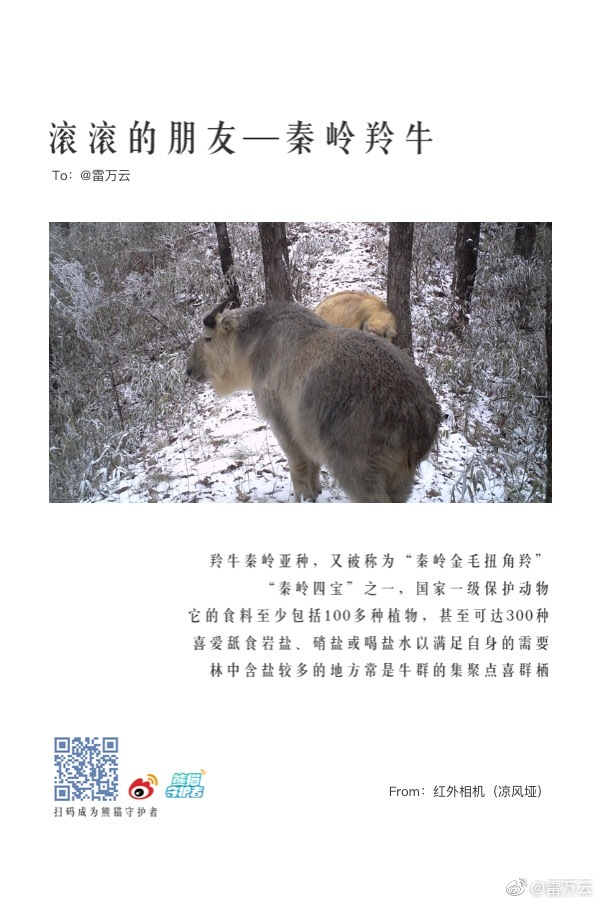

//@雷万云:@燕北新媒体 @老凉 @于海青 @Ada李力 @付亮的竞争情报应用 @余丰慧 请朋友们帮推推数字化转型这一主题！@雷万云:#工业4.0# 为了抓住机遇，找准向工业4.0演进的策略与方法，社会各界必须正确理解工业4.0的细节，诸如“第四次工业革命”、“信息物理融合系统（CPS）”、“智能制造及技术”等概念究竟意味着什么意思？如何避免这些概念因为可能的滥用而成为空洞的口号和浮躁的炒作，因为空洞的口号会阻碍而不是协同人们达到工业4.0的既定目标。科技引领产业革命，错过了工业4.0，可能错过的就是一个时代。@川北小哥 @程时旭 @弹古论斤 @老马自奋蹄